B-Cell Subtypes in Pre- and Postmenopausal Breast Cancer Patients
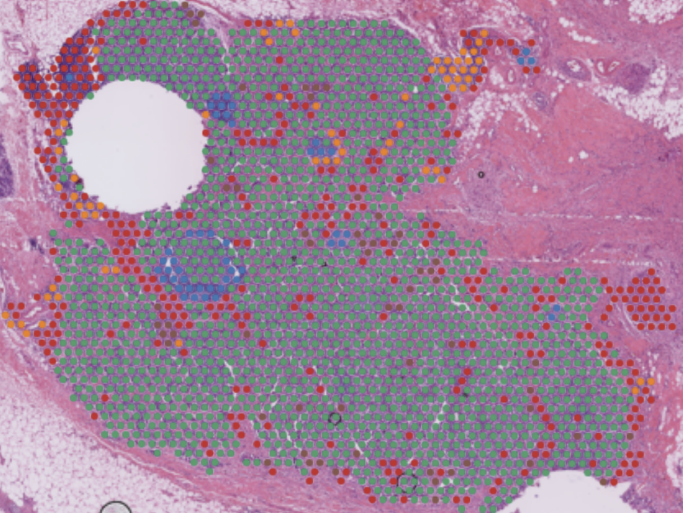
I’m a life sciences Ph.D. with expertise in diverse data modalities such as single-cell RNA sequencing, spatial transcriptomics, and imaging. My strong programming and bioinformatics skill set allow me to solve complex problems efficiently. With experience in gene expression analysis, integrating omics datasets, and applying deep-learning techniques to NGS data, I can rapidly derive important insights from biological data sets.
As a former experimentalist turned computational scientist, I bring can capably collaborate with both computational and bench scientists alike. I’m creative, adaptable, and passionate about tackling challenges that will positively impact the lives of patients through working within the pharmaceutical and biotechnology industries.
To learn more about some of the past computational projects, please scroll to the projects section below.
Swiss Institute of Bioinformatics
Bioinformatician - -
Utlized data science and Bioinformatics to work with patient datasets alongside the Translational Data Science group.
Friedrich Miescher Institute
Postdoctoral Fellow - -
Systems neuroscientist examining the relationship between computational models of neocortical function and transcriptionally defined cell types.
B-Cell Subtypes in Pre- and Postmenopausal Breast Cancer Patients

Connecting computational roles to the transcriptome within neuronal cell types
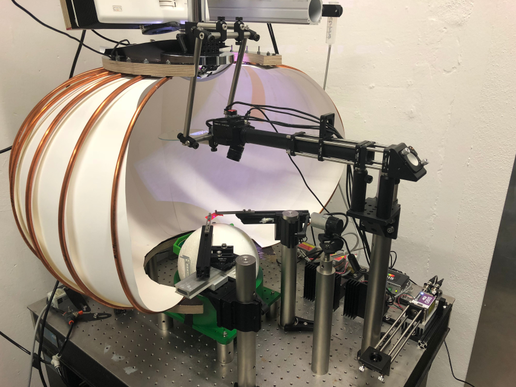
Neural activity patterns of cortical subtypes in awake behaving animals
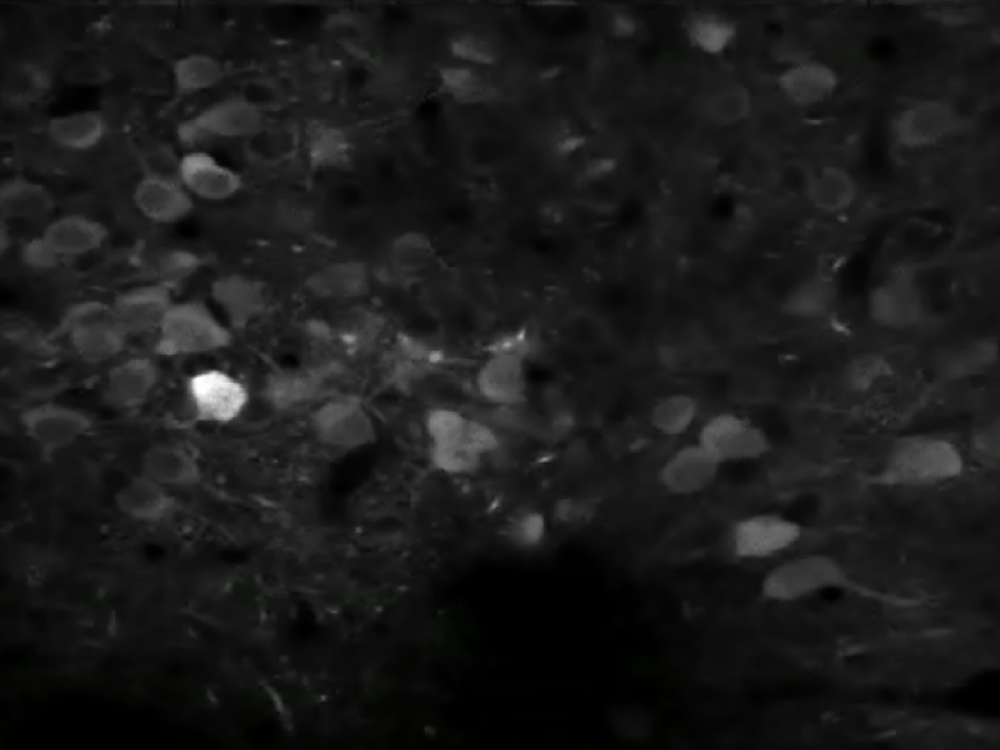
Characterizing cell type specific AAV Expressions Patterns
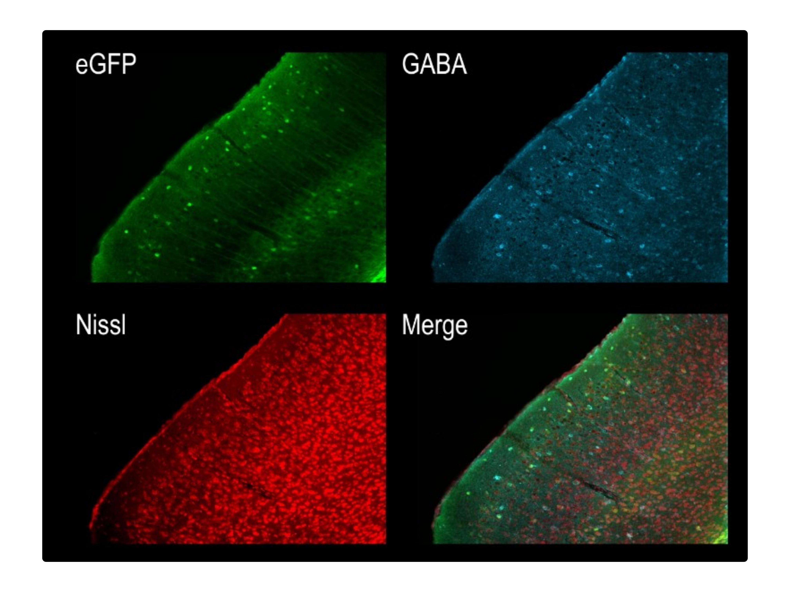
Predictive Modeling for Chemoradiotherapy Outcomes in Rectal Cancer
Home Office Drug Design: an ongoing newsletter & personal project
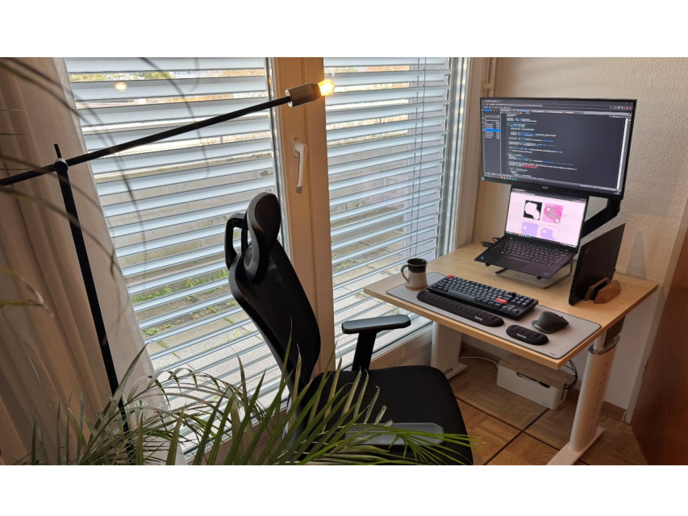
Brandeis University
Neuroscience Ph.D. -
Worcester Polytechnic Institute
Molecular Biology and Biotechnology -
Publications
Patent
Spatial transcriptomics project
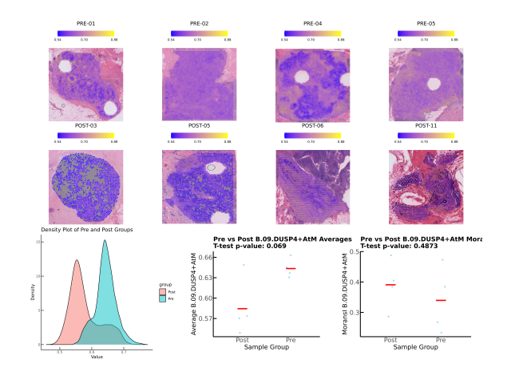
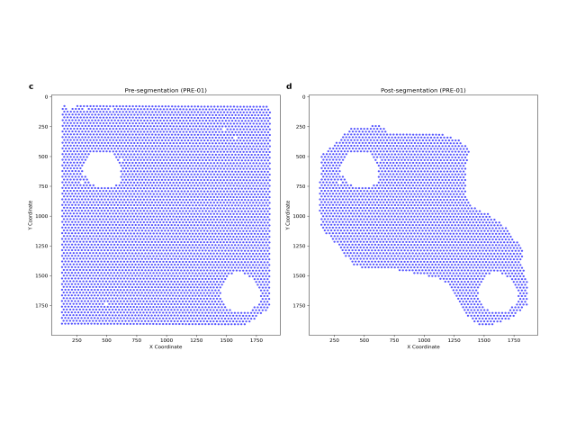
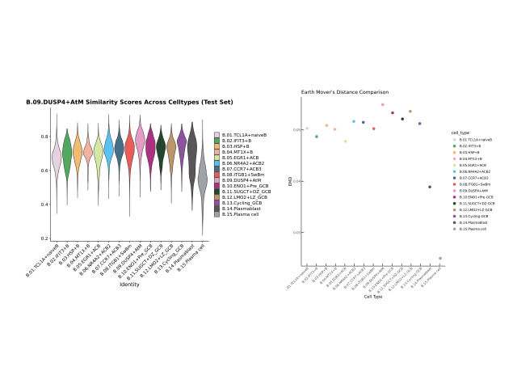
Summary: Premenopausal women are more likely to experience more aggressive forms of breast
cancer, often associated with poorer clinical outcomes compared to postmenopausal women. One potential
explanation could be differences in the composition of B cell subtypes among the immune cells infiltrating
the tumor. In this project, I collaborated with physicians and analyzed patient datasets to investigate the
role of B cell subtypes in breast cancer samples from premenopausal and postmenopausal women.
Full report located here
Relevant github repository
Single-cell RNA-seq Project
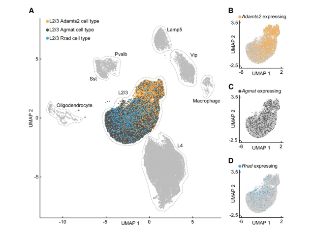
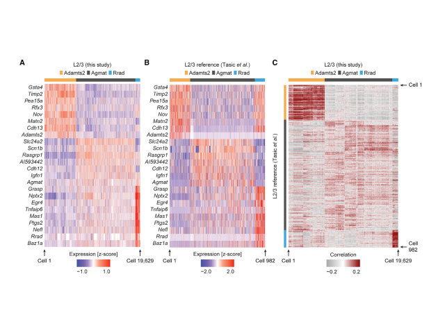
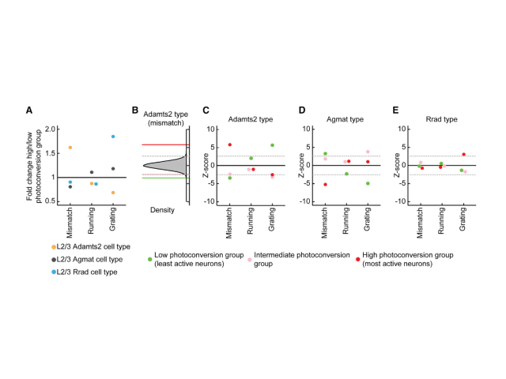
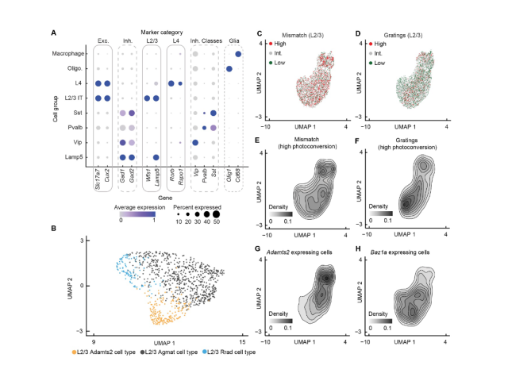
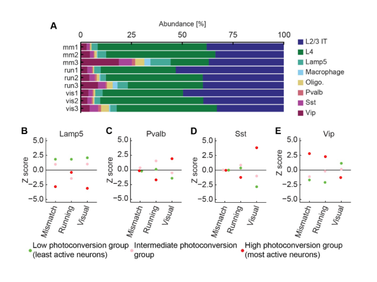
Summary: A fundamental question in systems neuroscience is how information is ulimately
processed within the brain. One theory of neural processing is that the brain uses prediciton errors to
update an internal representations. One version of this theory suggests that there are both negative
(something expected is missing) and positive (something surprising happened) prediction neurons and that
these represent two distinct neuronal cell types. Here I tested that theory utilizing single-cell RNA
sequencing and optogenetics combined with virtual reality and FACS to look for biomarkers relatinv to
negative and positive prediciton error neurons. I ultimately establshed that negative and positive
prediction error neurons represent transcriptionally defined cell types. These experiments
and analyses enabled the development of cell-type specific AAVs for labeling these populations.
Relevant publication
here
Relevant github repository
Neural activity project
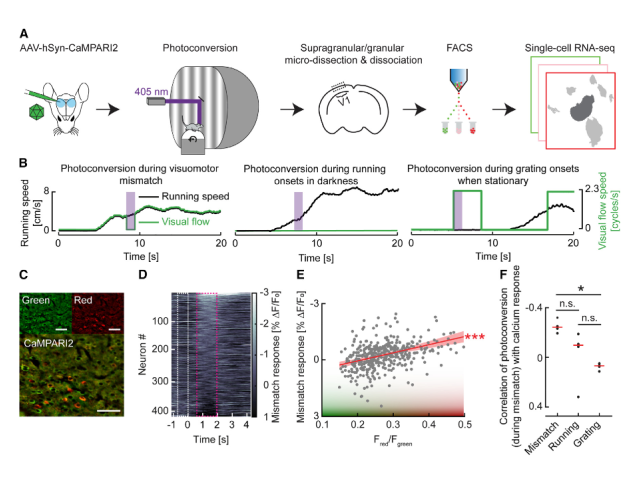
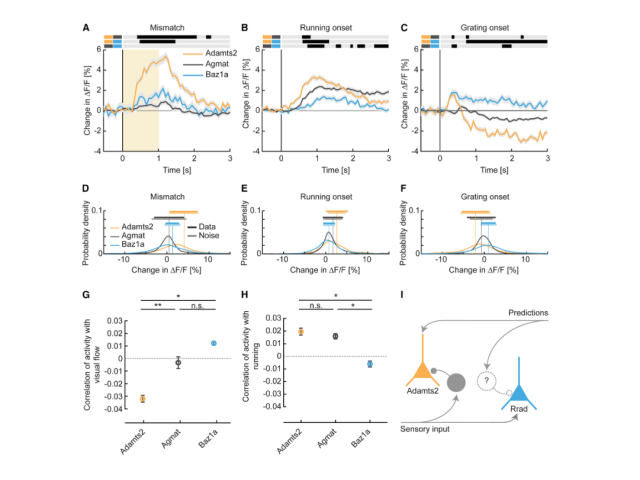
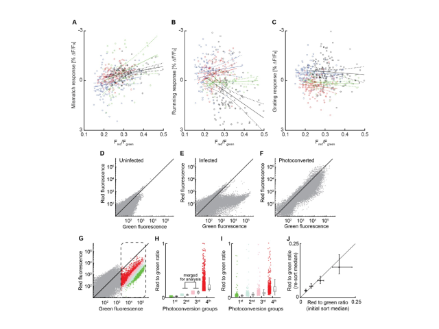
Here I ask whether AAVs which were designed to capture transcriptionally distinct populaitons have activity
patterns reminiscent of positive and negative prediciton error neurons. To do so, I analyzed and collected
neural activity imaging data from mice as they navigated a virtual reality environment. These cell type
specific AAVs were based on biomarkers I discovered through a series of single-cell RNA sequencing
experiments (see my Multimodal single-cell RNA-sequencing analysis project). Ultimately, I demonstrate that
transcriptionally distinct cell types exhibit differing activity patterns and presumably
serve different computational roles within the circuit, as defined by previously proposed computational
models.
Relevant publication
here
Relevant github
repository
AAV characterization project
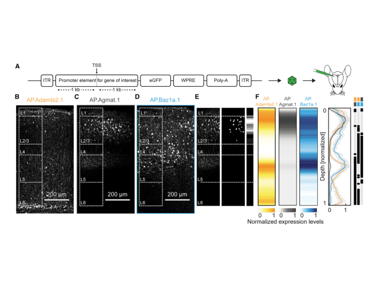
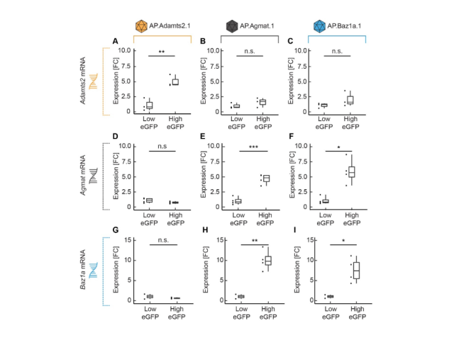
Here, I characterize cell-type specific AAVs that my collaborators and I designed and generated in the lab.
These AAVs label functionally specific populations in the Layer 2/3 visual cortex. I validated their
specificity using bulk RNA sequencing and histology.
Relevant publication
here
Bulk RNA sequencing github
repository
Histology github
repository
Neural networks project
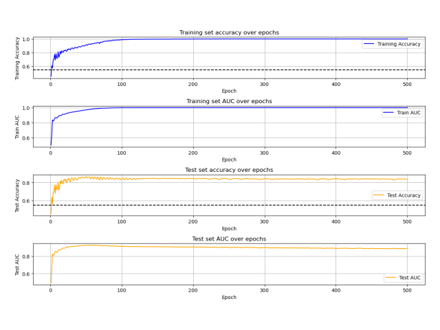
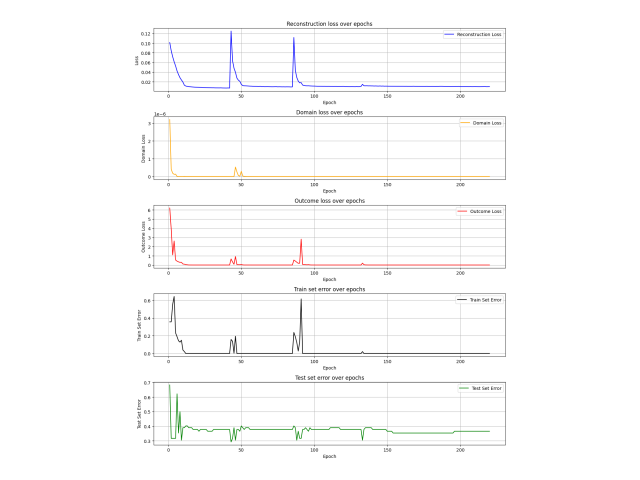
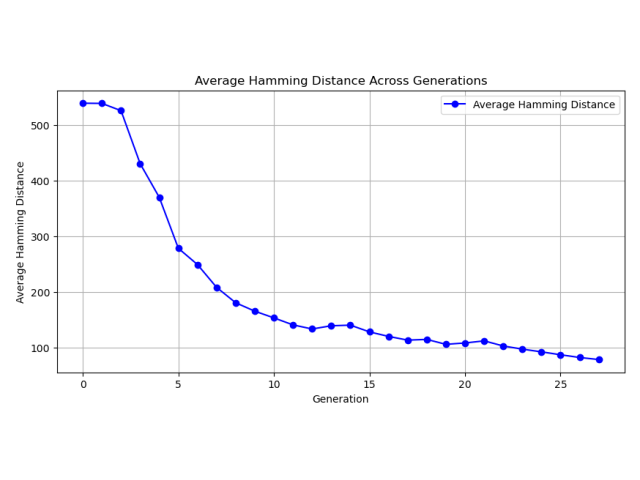
Neoadjuvant chemoradiotherapy can be beneficial for patients diagnosed with rectal cancer. However, only
about 30% of these patients achieve a pathological complete response, meaning that only a minority
experience significant benefits from what is often a physically demanding treatment. In this ongoing
project, I am utilizing artificial neural networks to predict the outcomes of chemoradiotherapy in rectal
cancer patients using RNA sequencing and microarray data sets obtained from biopsies taken before treatment.
Please note that this project is ongoing and more information will be provided after it is
completed.
Repository to be added later
Report to be added later
Personal newsletter project
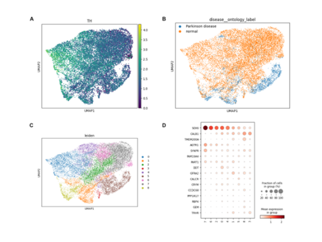
In this ongoing personal project, I am leveraging publicly available single-cell datasets and foundation
models to develop strategies for treating Parkinson's disease. The project is based on the principle that a
significant amount of biological research can be conducted computationally before entering the lab. I will
share more details as the project progresses. Feel free to subscribe to my newsletter or follow my GitHub
repository to stay updated on this work.
Check out the
newsletter
Relevant github repository